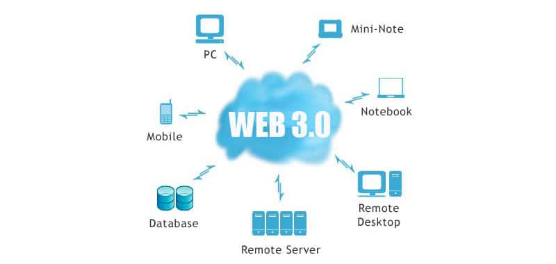

DEFINITION
Web 3.0 is the next evolution of the Internet, aiming to create a decentralised web where users own their data and digital assets. It combines blockchain technology, artificial intelligence, and the Semantic Web to build a more intelligent, trustless, and user-controlled Internet.
How It Works
Web 3.0 uses blockchain technology to enable decentralised applications (dApps) that run without central servers or controlling companies. Smart contracts automate agreements and transactions without intermediaries. Users own digital assets as NFTs and interact with decentralised autonomous organisations (DAOs).
The Semantic Web aspect of Web 3.0 means data is structured so that machines can understand, interpret, and reason about it. Combined with AI, this enables more personalised, intelligent, and context-aware web experiences.
Era
Currently emerging and being developed — not yet fully realised.
Key Technologies
Blockchain, smart contracts, AI, and Semantic Web standards.
Core Goal
Decentralisation — removing control from central platforms and giving it to users.
Examples
Decentralised apps (dApps), DeFi platforms, NFT marketplaces, and DAOs.